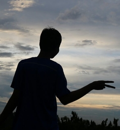
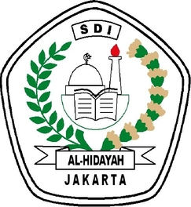
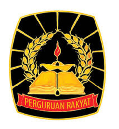
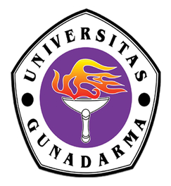

"Kebersamaan adalah Suatu Anugrah yang diberikan oleh Tuhan"
Name : Ahmad Fauzi Allagan
Tempat Tanggal Lahir : Jakarta, 17 September 1999
Email : fauziallagan@gmail.com
Alamat : Jl.Srengseng Sawah RT01/07 No.11
Asal Sekolah : SMK 3 Perguruan Cikini Jakarta

Pendidikan


